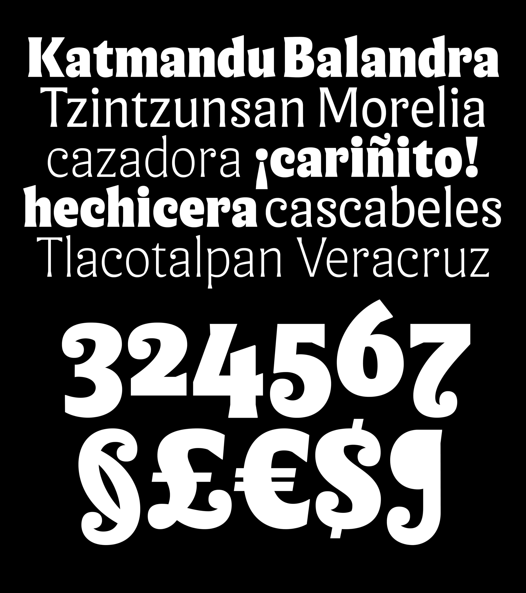
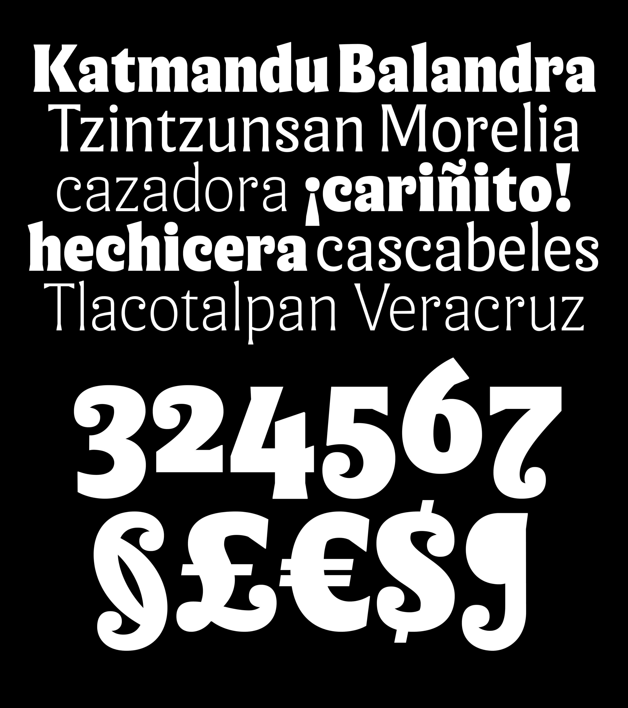

About
anima began as an exploration to find a meeting point between ancestry, craftsmanship, and type design.
The sketching process for anima was long and complex, involving shape research with different tools and from different perspectives
drawing inspiration from patterns and textures found in Prehispanic carvings and crafts.
The idea of “more is more” was always obsessively present at each stage of the process, questioning how much is the right amount of “more” and
when it becomes just “unnecessary drama”.
I’ve always been drawn to the subject of ornamentation, patterns and textures, an influence I attribute to my cultural background.
Where I come from, there’s nothing simple or minimalist. It’s actually completely the opposite and there’s something about that complexity
and sense of “muchness” that has always spoken to me. This was something I wanted to imprint on my project.
Much of my experimentation revolved around those ideas: patterns, texture itself, and texture in text.
I wondered in what ways I could play with the parameters of letterforms to control those textures.
At what point do letters become an image? How do you sketch in a way that actually tests a coherent type system?
These questions and the entire exploration became a reflection on the true purpose of a sketch within the design process.


It also made me realize the infinite possibilities that exist within this discipline. Letters are raw material ready to be shaped. They can be molded to fit any idea or concept.But that doesn’t mean you have to create them all … or do you? ;)


 
